Navegação interativa com dados fictícios e claramente identificados.
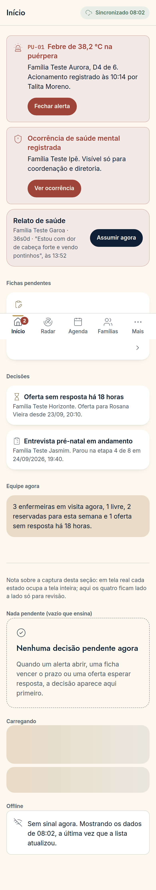
Início · Celular
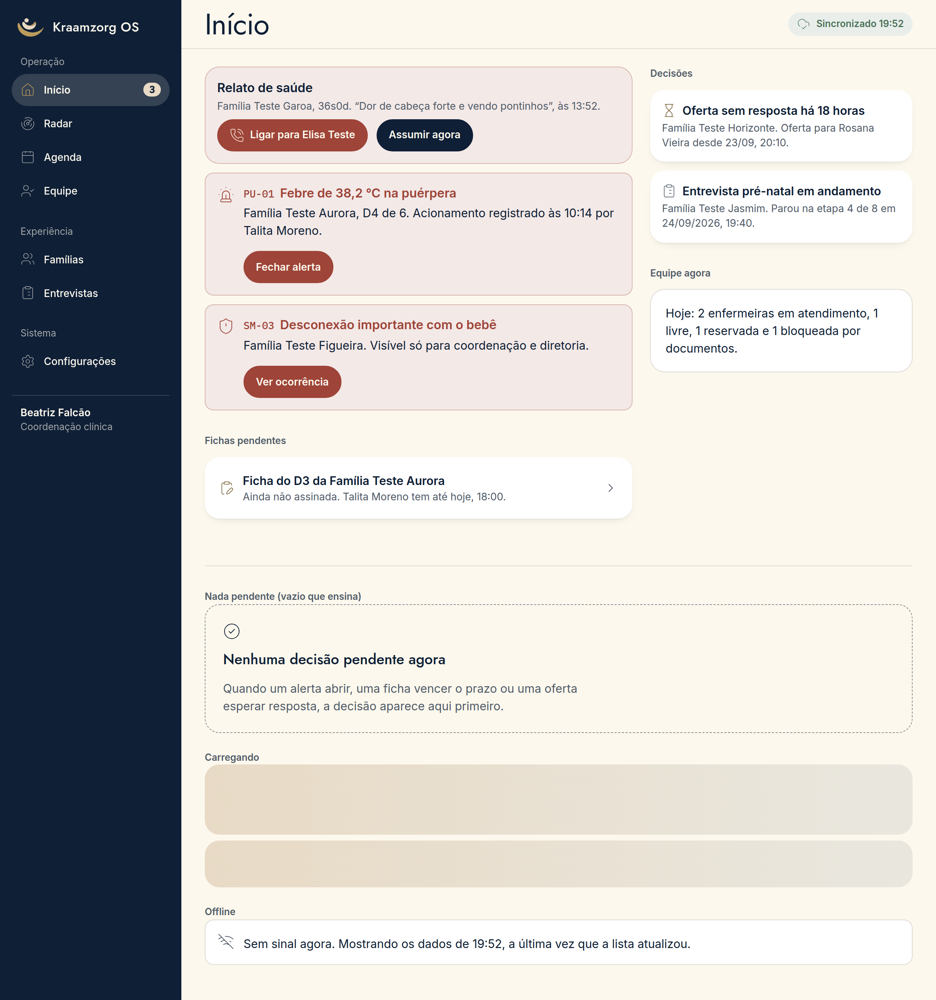
Início · Computador
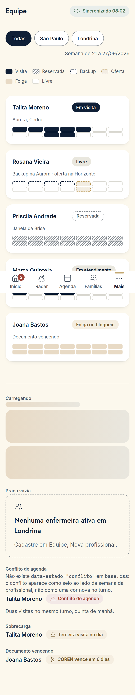
Equipe · Celular
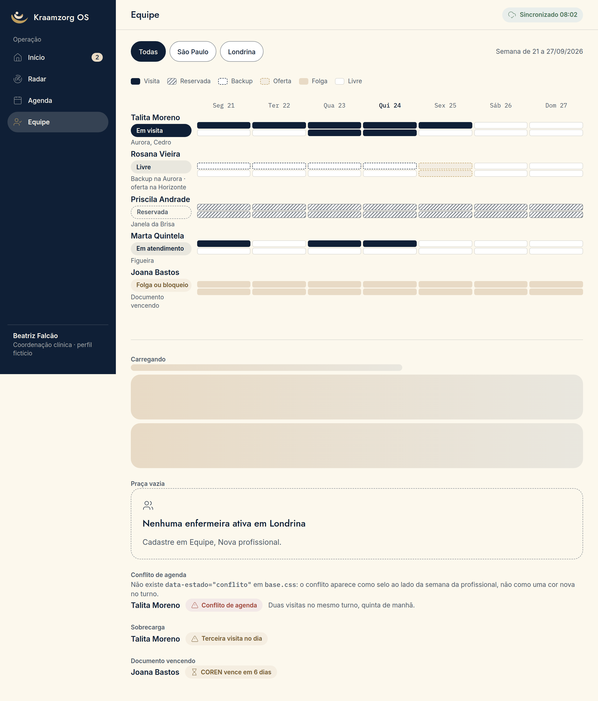
Equipe · Computador
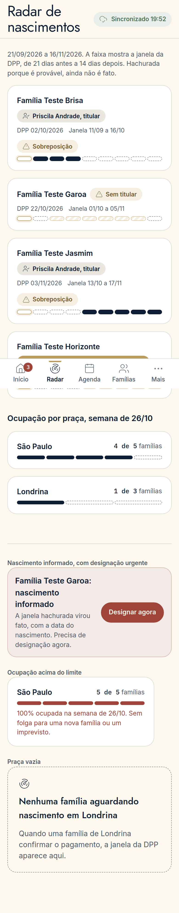
Radar · Celular
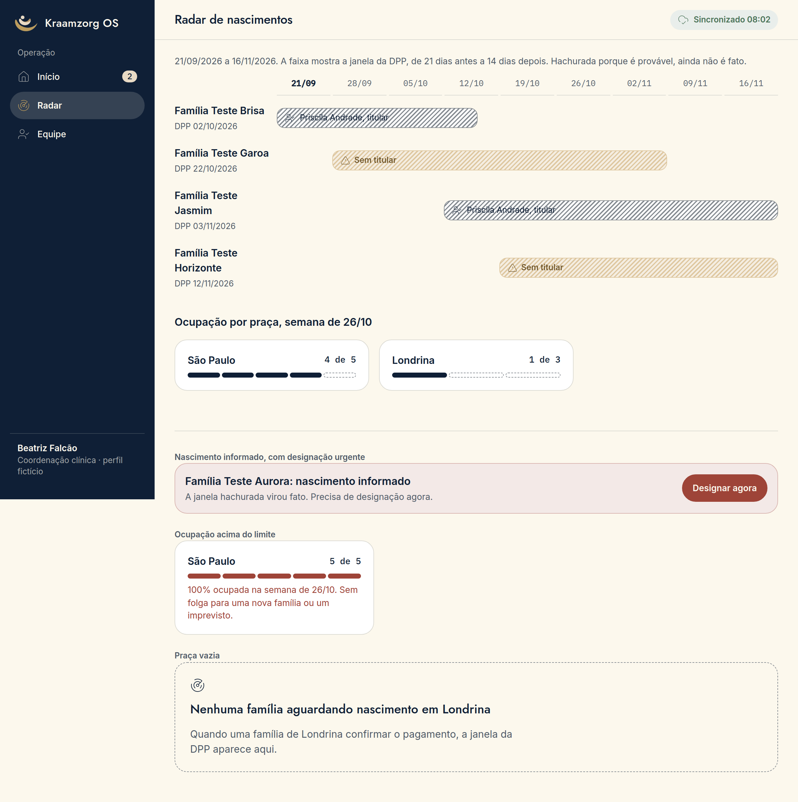
Radar · Computador
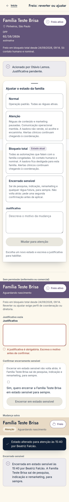
Freio global · Celular
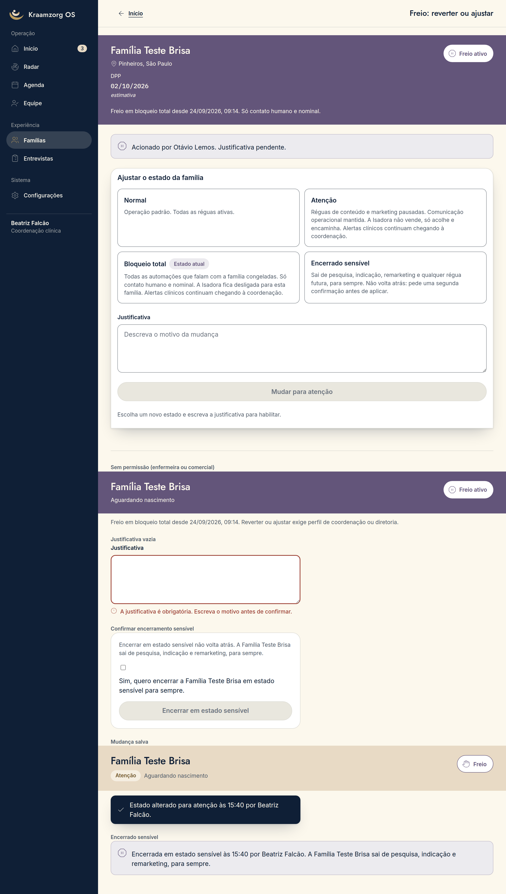
Freio global · Computador
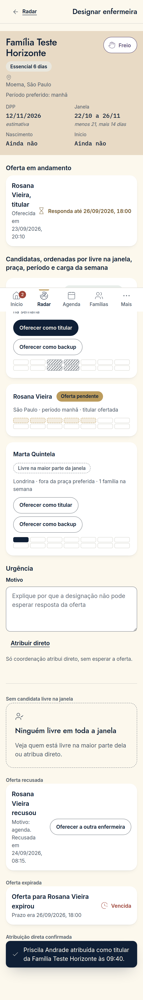
Designação · Celular
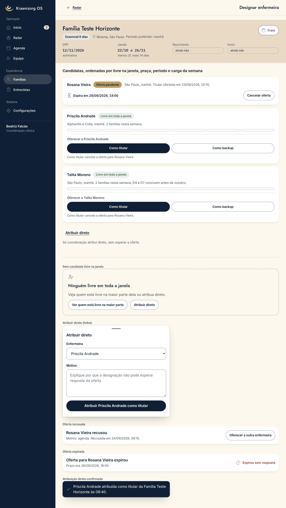
Designação · Computador
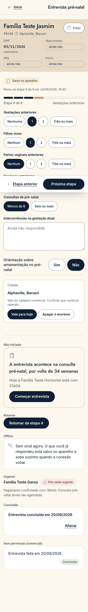
Entrevista · Celular
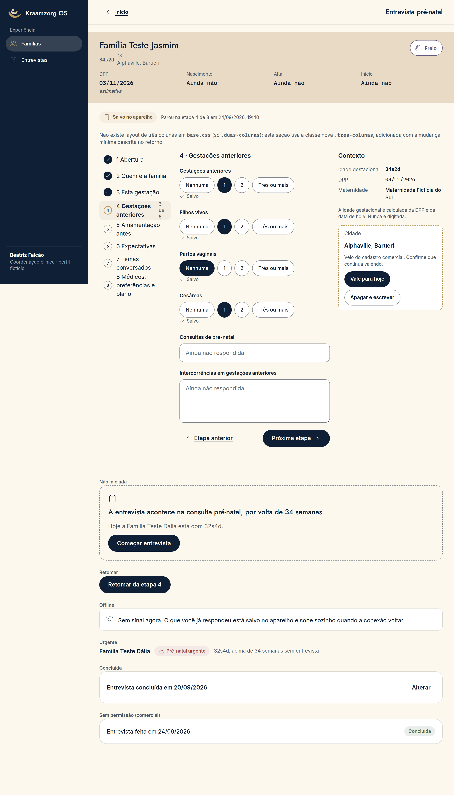
Entrevista · Computador
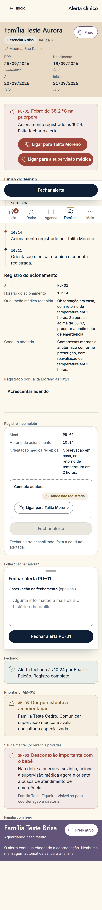
Alerta · Celular
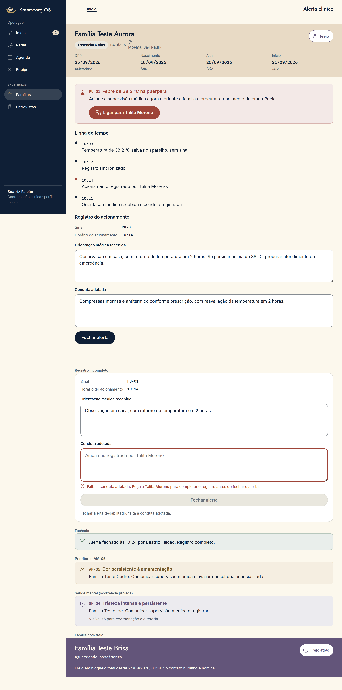
Alerta · Computador